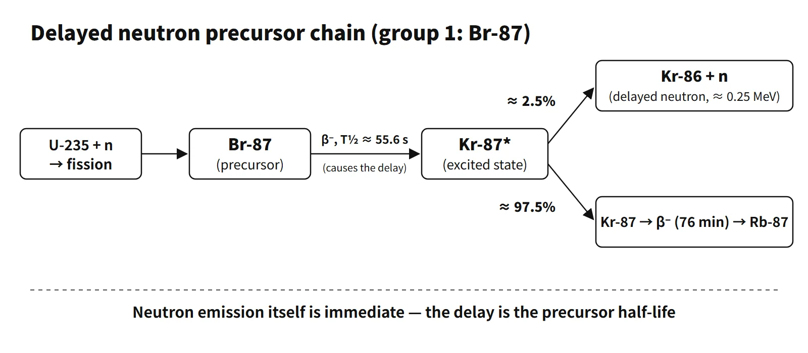

Reactor Physics & Kinetics · C-RX-001
Delayed Neutrons — Why 0.65 % of the Neutrons Makes a Reactor Controllable
Only 0.65 % of fission neutrons are delayed, but their precursor lifetimes stretch the mean generation time about 3,900 times and turn millisecond periods into controllable ones.
A delayed neutron is emitted when a fission-product precursor undergoes β⁻ decay and its daughter, left in an excited state above the neutron binding energy, immediately releases a neutron. The emission time is set by the precursor half-life (about 0.2–56 s), and in thermal fission of U-235 delayed neutrons make up about 0.65 % of all fission neutrons (β = 0.0065).
A good first line for an exam answer: "neutrons released seconds to tens of seconds after fission via β⁻ decay of precursors; they lengthen the reactor's mean generation time and so make power control possible" — this covers both the definition and the role.
Principle and mechanism
How they differ from prompt neutrons
More than 99 % of fission neutrons are prompt neutrons, emitted within about 10⁻¹⁴ s of fission. Delayed neutrons come from some of the neutron-rich nuclides produced by fission. The classic example is the group-1 precursor Br-87. When Br-87 (half-life about 55.6 s) undergoes β⁻ decay, about 2.5 % of the time it produces a highly excited state of Kr-87, which immediately emits a neutron and becomes Kr-86. The rest decays through the Kr-87 ground state to Rb-87. In other words, the neutron emission itself is immediate; the "delay" comes from the β-decay half-life of the precursor. Making this distinction clearly avoids losing marks on definition questions.
The energies differ too. Prompt neutrons average about 2 MeV, while delayed neutrons are lower, about 0.25–0.6 MeV depending on the group. This difference is what gives rise to βeff.
The six-group representation
There are dozens of precursors, but those with similar half-lives are grouped into six groups (Keepin data, U-235 thermal fission).
| Group | Half-life (s) | λᵢ (s⁻¹) | βᵢ | Representative precursors |
|---|---|---|---|---|
| 1 | 55.7 | 0.0124 | 0.000215 | Br-87 |
| 2 | 22.7 | 0.0305 | 0.001424 | I-137, Br-88 |
| 3 | 6.22 | 0.111 | 0.001274 | I-138, Br-89 |
| 4 | 2.30 | 0.301 | 0.002568 | I-139, etc. |
| 5 | 0.610 | 1.14 | 0.000748 | I-140, etc. |
| 6 | 0.230 | 3.01 | 0.000273 | Short-lived nuclides |
The βᵢ sum to 0.0065, and the fraction-weighted mean precursor lifetime τ̄ = Σ(βᵢ/λᵢ)/β is about 13 s. Calculation problems that use a one-group approximation usually give λ ≈ 0.08 s⁻¹ (τ̄ ≈ 12.5 s).
Mean generation time and reactor period
The key effect of delayed neutrons is to lengthen the mean generation time. To the prompt neutron lifetime ℓp (slowing-down time + diffusion time), the mean precursor lifetime τ̄ is added for the fraction β.
ℓ̄ = (1−β)·ℓp + β·(ℓp + τ̄) ≈ ℓp + β·τ̄
With the conditions of the 2026 exam, session 1, Q5 (slowing-down 10⁻⁶ s, diffusion 2×10⁻⁵ s, mean precursor lifetime 12.5 s), ℓp = 2.1×10⁻⁵ s and ℓ̄ ≈ 0.0813 s, about 3,900 times longer. The reason 0.65 % of the neutrons dominates the generation time is not the fraction itself but that the product β × τ̄ is overwhelmingly larger than ℓp.
For small reactivities the reactor period is approximately T ≈ ℓ̄/ρ. The exact relation comes from the inhour equation derived from the point kinetics equations, ρ = ωΛ + Σβᵢω/(ω+λᵢ) (ω = 1/T). The figure below shows results calculated with the six-group data: at ρ = 0.001 the period with delayed neutrons is about 55 s, but with prompt neutrons alone it is 0.02 s.
![Log-log plot of reactor period from 10^4 down to 10^-4 seconds against inserted reactivity from 10^-5 to 10^-1: the six-group inhour curve with delayed neutrons gives 55 s at rho = 0.001 versus 0.02 s for prompt neutrons only, about 2,700 times, and drops steeply at prompt criticality rho = beta = 0.0065; side cards give the mean generation time equation (prompt only 2.1e-5 s, with delayed about 0.081 s, about 3,900 times) and beta values of 0.0065 for U-235, 0.0021 for Pu-239 and 0.0148 for U-238, with the asymptotic period of about -80 s after a large negative insertion](../../assets/images/concepts/c-rx-001-delayed-neutrons/fig1-period-vs-reactivity.webp)
β and βeff (summary)
βeff is the delayed neutron fraction weighted by importance (adjoint flux). Because delayed neutrons are born at lower energy, they leak out less while fast (higher importance), but they cannot cause fast fission of U-238 (threshold about 1 MeV) (lower importance). In small, highly enriched cores the leakage effect dominates, so βeff > β; as the reactor gets larger, the leakage advantage shrinks and βeff approaches β. In large low-enriched commercial PWRs the importance factor is about 0.97, slightly below 1. The 65th exam (2001), session 2, Q3 asked exactly about this size dependence.
What it means in a plant
- Controllability: in the region ρ < β (delayed supercritical), periods are long — seconds to thousands of seconds — so control rod and boron adjustments fall within the response speed of operators and control systems. Startup-rate (SUR) limits also assume this region (1 dpm ≈ 26 s period). Operating limits on startup rate follow each plant's procedures.
- The prompt-critical boundary: once ρ = β (one dollar) is reached, the reactor is critical on prompt neutrons alone and the period drops to the order of Λ/(ρ−β), i.e. milliseconds. At that point only prompt negative feedback such as the Doppler effect stops the power rise, so design and operation exclude this region.
- Change with burnup: β of Pu-239 is about 0.0021, roughly one third of U-235 (0.0065). As the cycle proceeds, the share of Pu fission increases and βeff falls from about 0.006–0.007 at beginning of cycle to about 0.005 at end of cycle (core-specific; illustrative range). The same Δk then corresponds to more dollars, so reactivity accidents such as rod ejection are analysed conservatively with the end-of-cycle βeff. The β of U-238 fast fission (about 0.0148) raises the core-average β slightly.
- Behaviour after shutdown: when a large negative reactivity is inserted, power drops promptly and then decreases with a period of about −80 s set by the mean lifetime of the group-1 precursor. There is no way to make it fall faster. The 2023 exam, session 3, Q6 (ω = 1/80 s⁻¹) is a calculation question built on this property.
- Reactor-type differences: in heavy-water reactors (CANDU, Wolsong in South Korea), photoneutrons from (γ,n) reactions of high-energy gamma rays with deuterium act as additional delayed groups.
Regulatory basis
- US 10 CFR 50 Appendix A: GDC 11 (reactor inherent protection — designed so that prompt feedback suppresses power excursions), GDC 26 (two independent reactivity control systems), GDC 28 (reactivity limits: no damage to the reactor coolant pressure boundary or core cooling capability in reactivity accidents).
- NUREG-0800 SRP 4.3 (Nuclear Design): reviews the calculation methods and uncertainties of kinetics parameters such as βeff and prompt neutron lifetime. SRP 15.4.8 (rod ejection) uses these parameters as analysis inputs.
- Revision of reactivity-accident criteria: RG 1.77 (1974) was replaced in 2020 by RG 1.236, tightening fuel enthalpy and cladding failure criteria. Accident-criteria statements in answers from the time these questions were set (2001–2012) should be rewritten to current criteria. The physics of delayed neutrons has not changed.
- IAEA: the core design and reactivity control requirements of SSR-2/1 (Rev. 1, 2016) and SSG-52 (2019, core design) treat kinetics parameters as design considerations.
- South Korea: the Korean technical standard rule (Rules on Technical Standards for Nuclear Reactor Facilities, etc.), Article 18 (inherent protection of the reactor) and Article 28 (reactivity control systems), and Section 4.3 of the KINS Safety Review Guidelines for light-water reactors follow the same structure.
Easily confused pairs
| Prompt neutrons | Delayed neutrons | |
|---|---|---|
| Emitted by | Fission fragments right after fission | Daughters of precursor β⁻ decay |
| Emission time | Within about 10⁻¹⁴ s | 0.2–56 s (six groups) |
| Fraction (U-235 thermal) | About 99.35 % | β = 0.0065 |
| Mean energy | About 2 MeV | About 0.25–0.6 MeV |
| Contribution to generation time | ℓp ≈ 10⁻⁵–10⁻⁴ s | β·τ̄ ≈ 0.08 s |
| Meaning for control | If ρ > β, they alone govern the power | If ρ < β, they govern the period and allow control |
| β | βeff | |
|---|---|---|
| Definition | Fraction of delayed neutrons per fission | Effective fraction weighted by importance |
| Determined by | Fissioning nuclide | Nuclide + energy spectrum + leakage (core size) |
| Large PWR | U-235 0.0065 | Importance factor about 0.97 |
Key points at a glance
Model 10-point answer: definition of delayed neutrons and their role in reactor control
- Definition: neutrons emitted from the excited state of the daughter after β⁻ decay of fission-product precursors (Br-87, I-137, etc.).
- Cause of the delay: neutron emission is immediate; the delay comes from the precursor half-life (0.2–56 s).
- Fractions: U-235 β = 0.0065, Pu-239 about 0.0021, U-238 about 0.0148.
- Six groups: grouped by half-life; mean precursor lifetime about 13 s.
- βeff: importance-weighted fraction; lower energy → less leakage and less fast fission; large PWR about 0.97β.
- Mean generation time: ℓ̄ = ℓp + β·τ̄ increases from ≈ 2×10⁻⁵ s to about 0.08 s.
- Period: at ρ = 0.001, about 55 s with delayed neutrons versus 0.02 s with prompt neutrons only.
- Contribution to control: for ρ < β the period is long, so power can be controlled with control rods and boron.
- Prompt criticality: for ρ ≥ β (1$) the chain multiplies on prompt neutrons alone with periods of milliseconds, so it is excluded by design.
- Operational effects: βeff falls at end of cycle (Pu build-up) → applied conservatively in reactivity-accident analysis; after shutdown the period is about −80 s.

This is a model answer, not an official solution. It reflects the criteria current as of 2026.
Exam relevance
Delayed neutrons are among the most frequently examined reactor-physics topics in the Korean Professional Engineer (Nuclear Power) exam, with eleven appearances: 65th exam (2001), session 2, Q3 (why βeff exceeds β and how it depends on core size); 67th exam (2002), session 3, Q1 (deriving the zero-power transfer function with one delayed group); 2012 exam, session 4, Q6; 2015 exam, session 1, Q4; 2017 exam, session 1, Q2 (the inhour equation and the physical meaning of its terms); 2018 exam, session 2, Q1 (five dynamic states by ρ and β); 2019 exam, session 1, Q8; 2021 exam, session 3, Q6 (period for a 0.002 insertion with and without delayed neutrons); 2022 exam, session 1, Q4 (prompt versus delayed neutrons); 2023 exam, session 3, Q6 (period and power after a 10 % shutdown insertion); and 2026 exam, session 1, Q5 (mean generation time and the role of delayed neutrons). The question types are the definition and role, β versus βeff, the inhour equation, period calculations with and without delayed neutrons, and the negative −80 s period after shutdown. State clearly that the emission itself is prompt and the delay belongs to the precursor, and check whether a problem gives the one-group λ (often 0.08 s⁻¹) or expects the six-group data.